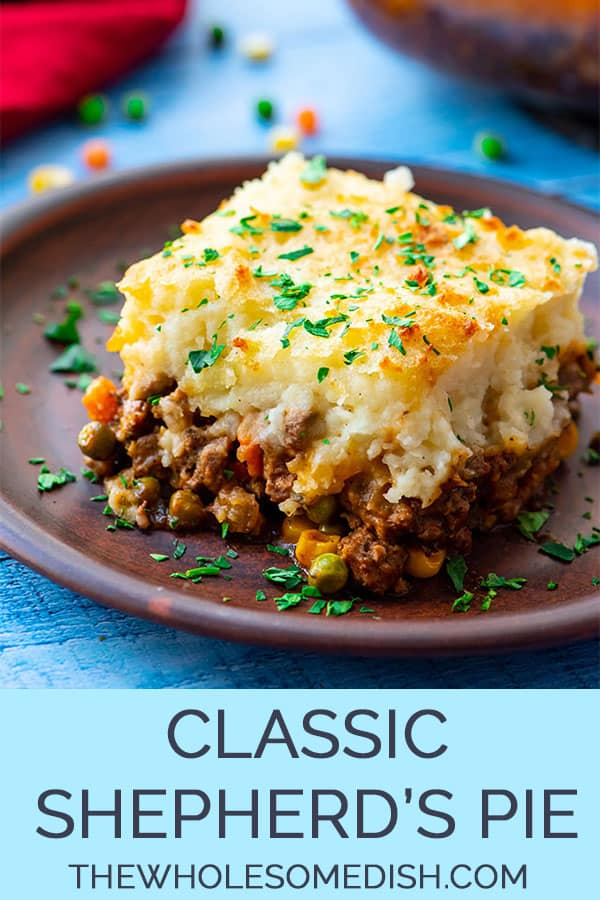

Shepherd's Pie

Description
Meat and veggies topped with mashed potatoes.
Ingredients
- Meat
- Veggies
- Potatoes
- Spices
Steps
- Brown the meat
- Boil the potaotes
- Add the veggies to the meat, and layer the potatoes on top
- Bake at 350 degrees for 20 minutes